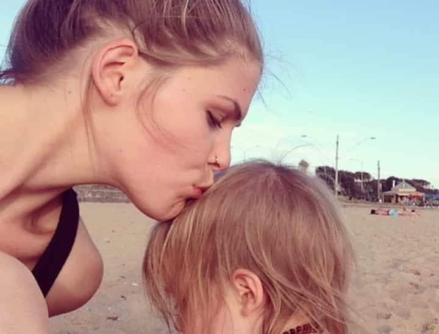

< < < Back
Is This “Inspiration To Women” Faking Cancer And Stealing Hundreds Of Thousands Of Dollars? – Return Of Kings
Belle Gibson has been outed as a likely charity scammer and cancer faker, failing to pass on at least $300,000 in promised donations from her nutrition business. The non-medically qualified Gibson previously “developed” The Whole Pantry food recipe app, which exhorts cancer sufferers and others to dispense with conventional medicine such as chemotherapy and follow only a rigorous whole foods diet.
The Australian woman claims that this approach saved her from terminal brain cancer, cancer she has blamed on “the government.” Medical professionals and the media are now finding countless holes in her cancer story and uncovering a purported life of luxury. Other secrets include her fanatical opposition to any form of vaccination, including ones she argues made her ill in the first place.
Gibson has received almost daily plaudits for her efforts since 2013, including Cosmopolitan‘s “Fun Fearless Female Award”. A female-oriented “Healing Belle” social media fiefdom is now firmly established, centered on The Whole Pantry app, which promised to give away “nearly all” profits to various charities. Apple enthusiastically chose the app as one of the precious few to be featured on the new Apple Watch. Belle has subsequently been exposed as a pathological liar, to the extent of even lying about her age.
Always believe the campaigning woman, no matter what
Belle Gibson’s alleged frauds, including those of the medical, financial and social variety, highlight a pernicious theme in viral or “coming from nowhere” stories. Like the absurd Emma Sulkowicz and “Jackie” UVA rape hoaxes, a pitchfork-carrying (or, in this case, app-using) public and investigating professionals and corporate bodies are emotionalized into believing a story without question.
Why? Because women need to share their stories to encourage other women and therefore they must be true. Anyone who superficially appears to want to inspire is, ergo, inspirational. The lack of oversight and negligence of those propping up Belle was so egregious that she was on the cusp of internationally releasing her The Whole Pantry book tie-in of the app.
Unsurprisingly, the vast, vast majority of Belle’s devotees have been fellow women. They worshipped her like the Whole Foods version of Baal on Mount Sinai. Without mitigating the responsibility of Belle for her own probable scamming, questions need to be asked about the beyond herd-like mentality of women following social media gurus, especially those without any proper qualifications.

Belle Gibson “found” herself followed by 200,000 people on Instagram. She released a hundred times more self-promoting photos than details about her condition and past.
If they’re willing to follow a a likely scam artist, is it really surprising that they follow invented “one in five” rape statistics (later surreptitiously removed from the websites of people like US Senator Kirsten Gillibrand)? Or the menagerie of other fabricated claims and dubious stories and “statistical” information?
Who dropped the ball?
Multiple media outlets, which only saw the words “cancer,” “survival,” “charity,” and “social media” absolved themselves of any responsibility to investigate or substantially fact-check Gibson’s background. The obsession with finding “inspirational women” and “role models for girls” is so all-encompassing that such proper practices are dismissed as moral roadblocks to disseminating a wonder-story like Belle’s.
When this woman sensationally claimed in 2014 that her previously beaten cancer had returned and was ravaging her brain, spleen, uterus and liver in tandem, what media follow-up happened? Well, no one working for the same outlets seemed to bat an eyelid when she suddenly, in the aftermath of her four-cancer revelations, flew to the US to help Apple develop her app.
And no one then unearthed, or decided to publish, the innumerable indications she was driving a BMW luxury 4WD (suspicious at her faked age of 26, let alone her purported age of 23), enjoying a slew of international vacations and plastic-bingeing on $2,000 designer handbags.
Cosmopolitan was warned that Belle was a fake but, presumably like other magazines and papers, opted to continue supporting her, even generating more positive social media press for her.
Gibson alleged she had major heart surgery in 2009. Where are the scars?
A mentally unstable, anti-vaccination schoolgirl
School peers of Belle Gibson have described her as a compulsive attention-seeker who inveterately sought to “reinvent” herself as an emo, surfer girl, preppy type and God knows what else. Moreover, she endorsed a form of anti-vaccination extremism from those earliest days, which explains a late 2014 interview where she blamed her cancer on a cervical cancer vaccine. This anti-cervical cancer measure was rolled out en masse and given to young Australian women from the first decade of the 2000s.
In a shocking indictment of the diligence of Apple, Cosmopolitan, Vogue and Simon & Schuster books in supporting (and enriching) her, Gibson previously described herself as a “distinguished psychopath”. Sunday Style has been another unquestioning spruiker of Gibson, describing her as “inspirational” in an article that also reiterated her “the government gave me cancer” claims. It’s clear they, too, failed to do any homework and blatantly disregarded serious logical fallacies in her story and overall reasoning.
Her claims about the time she was originally given to live (four months) flies in the face of medical professionals solicited by The Australian newspaper, who claim they know of no one surviving the form of brain cancer capable of killing so rapidly. She has also repeatedly used incorrect terminology in describing the severity of the initial brain cancer, as if she had watched a low-brow medical drama.
For the sake of brevity, I’ve had to omit another two dozen snippets about Belle’s outlandish claims, fabrications and all-round head-turning behavior. The plethora of articles out there is almost like nothing I have seen.
This image shows “Healing Belle” but a range of photos are now surfacing showing “Beer-Drinking Belle,” “Party Belle” and “Vacation Belle”.
Is “Healing Belle” helping to kill people?
Belle Gibson is no doctor and certainly no expert. Whilst the popularity of “new age” methods reflects a widespread distrust of conventional medicine and particularly a powerful pharmaceutical industry, the idea that the typical hospital system is dangerous remains catastrophically moronic and reminiscent of Illuminati conspiracy theories.
Whatever failures in service delivery sometimes occur, chemotherapy and related cancer treatments have saved, conclusively, tens of millions of lives since their inception.
Ironically, this same ignorance is what potentially cost Steve Jobs, the founder of the company that has chosen to headline Gibson’s app, his own life. Diagnosed with pancreatic cancer, Jobs frittered away many months indulging in gimmicky Eastern medical practices at the expense of conventional treatment. By the time he took the more common (and effective) path, it was already too late.
Belle Gibson, unlike Jobs, is actively proselytizing and seeking to have people extract themselves from the conventional system. It will only lead to deaths and Gibson has in all likelihood harmed and helped shorten the lives of highly gullible people.
Is anyone actually surprised?
The quest for continual “female role models” is so retrograde in 2015 that the mantra is “believe now, don’t prove later.” Even the former dishonest method of taking a half-truth to concoct a full truth has fallen by the wayside because it doesn’t make a compelling enough story for women’s magazines and the readers of “inspirational woman” newspaper pieces.
Don’t worry, though, there’ll be another mentally ill “inspirational woman” coming in a couple of months. They always do.
Read More: 5 Reasons To Date A Man With Cancer